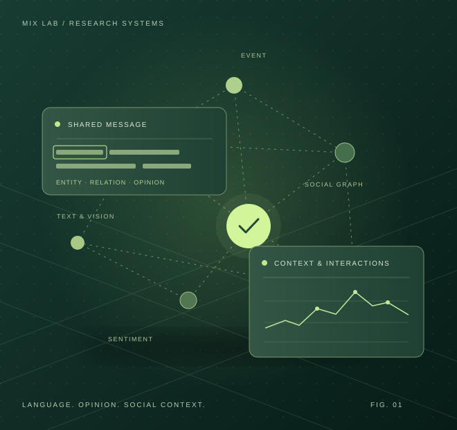

Sentiment analysis ↗
Identifying opinion targets and interpreting sentiment in text, images, video and audio. This research includes aspect-level analysis, multimodal learning and data augmentation.
MIX LAB / SOCIAL MEDIA INTELLIGENCE
We study how language, images and online interactions convey facts, opinions and social meaning. Our work connects information extraction, fine-grained sentiment analysis and multimodal understanding with open social media resources.
Research by Yan Song and collaborators

01 / OUR RESEARCH
Online communication combines informal text with images, video and evolving conversations. We study how to extract its facts, understand its opinions and organize the data needed to analyze it.
Our work is organized into five connected research areas, with language methods and tools supporting the study of social information.
Identifying opinion targets and interpreting sentiment in text, images, video and audio. This research includes aspect-level analysis, multimodal learning and data augmentation.
Organizing unstructured language into entities, relations and semantic roles. The work combines semantic augmentation, linguistic structure, memory mechanisms and pre-training.
Building event-centered social media resources that connect discussion and sentiment over time with textual evidence and interaction structure.
Understanding harmful meaning across image and text, and studying methods for reducing toxic language model outputs.
Developing Chinese text processing methods and tools that connect language models with local task models.
02 / WORK BY RESEARCH AREA
Five research areas bring together the papers, datasets and tools. Browse each area or narrow the selection by topic, year or keyword.
Each research area has its own overview and collection of works. Dated papers and open projects retain their publication and release labels.
RESEARCH AREA 0111 works
Identifying opinion targets and interpreting sentiment in text, images, video and audio. This research includes aspect-level analysis, multimodal learning and data augmentation.
Provides a relation-aware pipeline for generating augmented data and evaluating aspect-based sentiment models.
Uses task-specific diffusion to reduce lexical, bag-of-words and syntactic noise around an opinion target.
The linked repository currently announces a forthcoming code release.
Uses combinatory categorial grammar to support joint aspect extraction and sentiment classification.
Learns complementary information about aspect terms for fine-grained sentiment prediction.
Uses dependency information to connect each opinion target with the words expressing sentiment about it.
Uses topic memories to support aspect-based sentiment analysis in federated learning.
Combines typed dependency graphs and representations across model layers for aspect-level sentiment prediction.
Jointly extracts opinion targets and predicts their sentiment with directional graph convolutions.
Decomposes multimodal representations to learn shared and contrasting information for affective computing.
Studies shared sentiment prototypes for adaptive analysis of language, visual and acoustic signals.
Adapts a multimodal language model with visual and textual plugins connected through a memory hub.
RESEARCH AREA 029 works
Organizing unstructured language into entities, relations and semantic roles. The work combines semantic augmentation, linguistic structure, memory mechanisms and pre-training.
Recognizes entities in informal social media text by enriching word representations with semantic information from similar words.
Combines complementary syntactic analyses to improve named entity recognition.
Encourages syntax-aware representations through dependency masking during pre-training.
Studies how combinatory categorial grammar can reveal underlying connections between entities.
The linked repository currently announces a forthcoming code release.
Uses adversarial multi-task learning to improve relation extraction.
Models typed word dependencies with map memories for relation extraction.
Builds word graphs from n-grams to capture informative local structures for relation extraction.
The linked repository currently announces a forthcoming code release.
Uses word dependencies and attentive graph convolution to identify semantic relations between entities.
Uses syntactic information to identify predicate–argument roles in text.
RESEARCH AREA 031 work
Building event-centered social media resources that connect discussion and sentiment over time with textual evidence and interaction structure.
Pairs event-level discussion intensity and sentiment time series with temporally aligned text and reply / repost interaction structure.
RESEARCH AREA 043 works
Understanding harmful meaning across image and text, and studying methods for reducing toxic language model outputs.
Provides teacher training, projection alignment, generation and evaluation tools for language model detoxification.
Provides a core method using aligned representations, complementary fusion and soft prompts for hateful meme detection with Qwen2-VL.
The release contains the core method. It does not include the full set of paper experiment scripts.
Learns image–text contrast with cross-modal memory and self-rejection sampling for tasks including hateful meme detection.
The linked repository currently announces a forthcoming code release.
RESEARCH AREA 055 works
Developing Chinese text processing methods and tools that connect language models with local task models.
Learns global character associations for Chinese word segmentation across federated data sources.
Uses wordhood memories to support Chinese word segmentation, a foundation for downstream text analysis.
Jointly models segmentation and part-of-speech tags with automatically analyzed linguistic knowledge.
Uses character n-gram attention for joint segmentation and part-of-speech tagging.
No matching works. Try another keyword or research topic.
03 / CONNECTED RESEARCH QUESTIONS
Each line of research addresses a different part of understanding shared information. Together they frame a broad approach to social media information processing.
Find entities, resolve relationships and identify semantic roles in unstructured text.
Separate the sentiment expressed about different targets in the same message.
Study shared, complementary and contrasting information across modalities.
Connect event-level time series with textual evidence and interaction structure.
OPEN RESEARCH
Discover research implementations, data resources and project documentation through Yan Song’s NLP Group on GitHub.
Visit our GitHub ↗